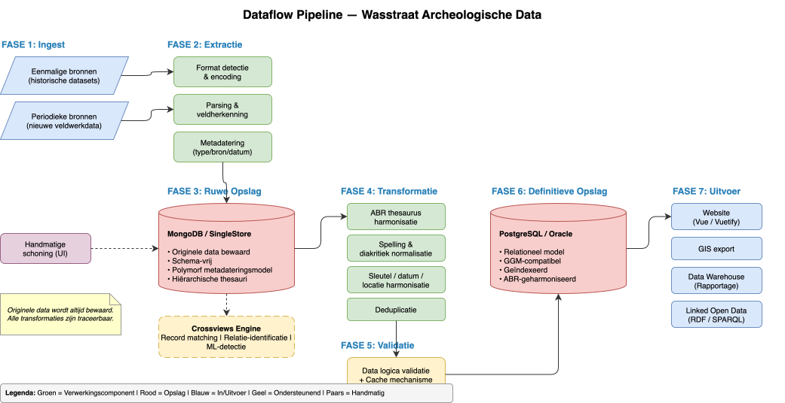

Gegevensstroomverloop¶
Overzicht¶
Dit document beschrijft de volledige stroom van archeologische gegevens door het Wasstraat-systeem, van bron tot eindgebruiker. Elke fase voegt waarde toe door gegevens incrementeel beter toegankelijk, betrouwbaar en betekenisvol te maken.

Fase 1: Bronsystemen¶
Gegevens origineren uit verschillende bronnen:
| Brontype | Beschrijving | Frequentie |
|---|---|---|
| Historische datasets | Gedigitaliseerde collecties, archieven | Eenmalig |
| Veldwerkapplicaties | Real-time veldopnamen van opgravingen | Periodiek |
| Externe bronnen | Samenwerking met andere instellingen | Variabel |
| Thesauribronnen | Gecontroleerde vocabulaires (ABR, etc.) | Regelmatig |
Fase 2: Extractie¶
Python-extractielaag leest gegevens in native formaten en converteert naar standaardformaten.
Extractielogica¶
# Pseudo-code voor typische extractiestap
for bronbestand in bronsystemen:
data = lees_bronformaat(bronbestand)
validatie = basale_checks(data)
standaard = map_naar_standaardformaat(data)
log_extractie(bronbestand, standaard, validatie)
Mapping en Herkenning¶
De mappinglaag herkent: - Termdefinities: Mapping van bron-termen naar gestandaardiseerde vocabulaires - Veldherkenning: Automatische detectie van semantisch equivalente velden - Domeinafleiding: Bepaling van gegevensdomeinen op basis van inhoud
Fase 3: Ruwopslag¶
Opgeslagen gegevens in niet-genormaliseerde vorm:
MongoDB NoSQL Storage¶
Flexibele schema voor heterogene bronnen: - Behoud van originele structuur - Semi-gestructureerde gegevens - Schaalbare horizontale distributie
SingleStore Kolom-opslag¶
Geoptimaliseerd voor analytische queries: - Efficiënte compressie - Snelle aggregaties - Ondersteuning voor crossviews
Fase 4: Transformatie¶
De Python-transformatielaag en SQLAlchemy ORM normaliseren en harmoniseren gegevens:
ABR-Harmonisering¶
Mapping van lokale termen naar ABR-thesaurusconcepten:
Lokale term: "middeleeuwse aardewerkscherf"
↓ [ABR-mapping]
ABR-concept: "keramiek" (urn:nbn:nl:ui:nbn-id-123456)
Datumafstemming¶
Conversie naar ISO 8601-standaard:
Verschillende invoeren: "13de eeuw", "1200-1300", "AD 1250"
↓ [Normalisering]
Standaard: {"begin": 1200, "einde": 1300}
Locatieharmonisering¶
Consolidatie van locatieaanduidingen:
Duplicate locaties → Deduplicatie → Canonische locatie-ID
RDx,y koordinaten → Conversie naar WGS84
Spelling en Tekst¶
- Unicode-normalisatie
- Diacrietenafhandeling
- Diakritiek-neutrale zoekindex
Fase 5: Definitieve Opslag¶
Genormaliseerde, canonieke opslag in relationele databases:
PostgreSQL¶
Voorkeur voor nieuwe implementaties: - Open-source, goed gedocumenteerd - Sterke JSON/jsonb-ondersteuning - PostGIS extensie voor geografische data - Excellent voor FAIR data-workflows
Oracle¶
Voor legacy-integratie en enterprise-omgevingen: - Reeds aanwezig in sommige organisaties - Sterke integratie met BI-tools
Fase 6: Verdere Verwerking¶
Fulltext Search¶
Polymorfe zoekindexering met: - Vakgericht-bewuste tokening - Multi-language stemming - Relevantie-ranking op basis van gegevensveld
Crossviews¶
Query-lagen die data uit meerdere bronnen combineren zonder duplicatie
Fase 7: Outputs¶
Website¶
- REST API's
- Web UI voor zoeken en browse
- Linked Open Data exports
GIS-Integratie¶
- WMS/WFS services
- GeoJSON exports
- Kaartgebaseerde interfaces
Data Warehouse¶
- OLAP-cubes
- Reporting dashboards
- Exports voor verdere analyse
Transformatiestelling¶
Een kritiek ontwerp-principe:
Originele data wordt altijd behouden. Transformaties kunnen opnieuw worden uitgevoerd.
Dit betekent: - Alle transformatielogica is versioneerd - Transformatieresultaten kunnen worden geverifieerd - Fouten kunnen worden geïsoleerd en gecorrigeerd - Volledig audittrail is beschikbaar
Handmatige Interventie¶
De handmatige schoonmaakinterface biedt menselijke mogelijkheden: - Controle van onzekere transformaties - Correctie van foutieve mappings - Disambiguering van anomalieën
Dit is vooral belangrijk voor: - Waardeconflicten tussen bronnen - Verouderde of onvolledig bron-thesaurus - Contextgebonden interpretaties